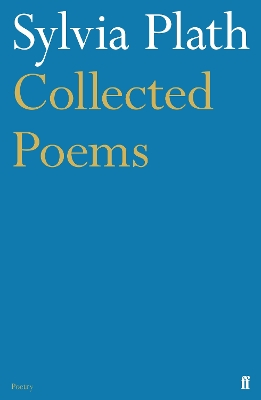
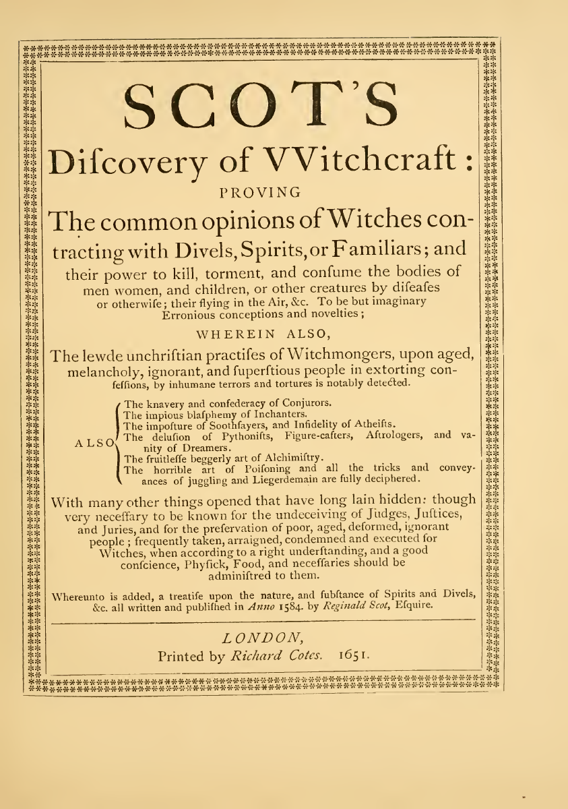
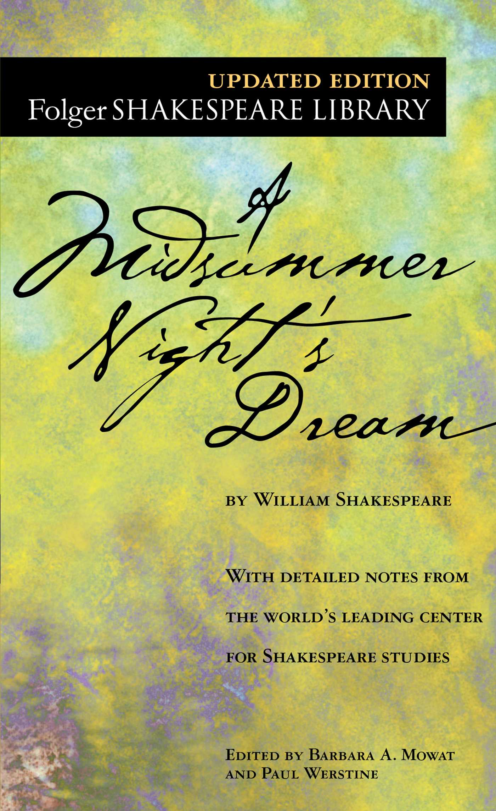
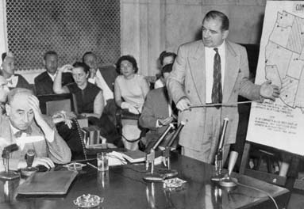
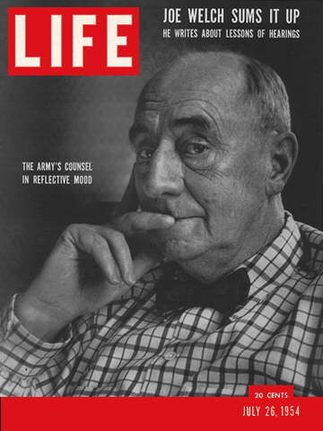
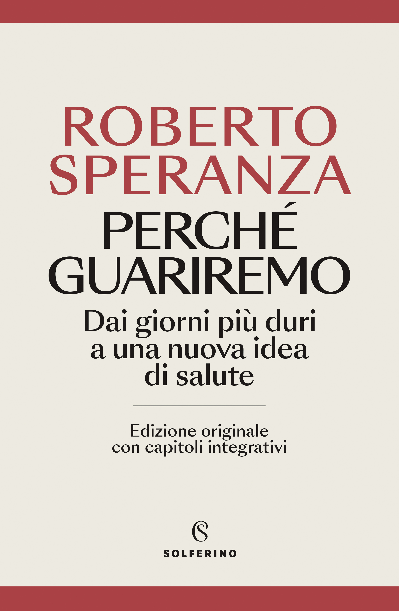
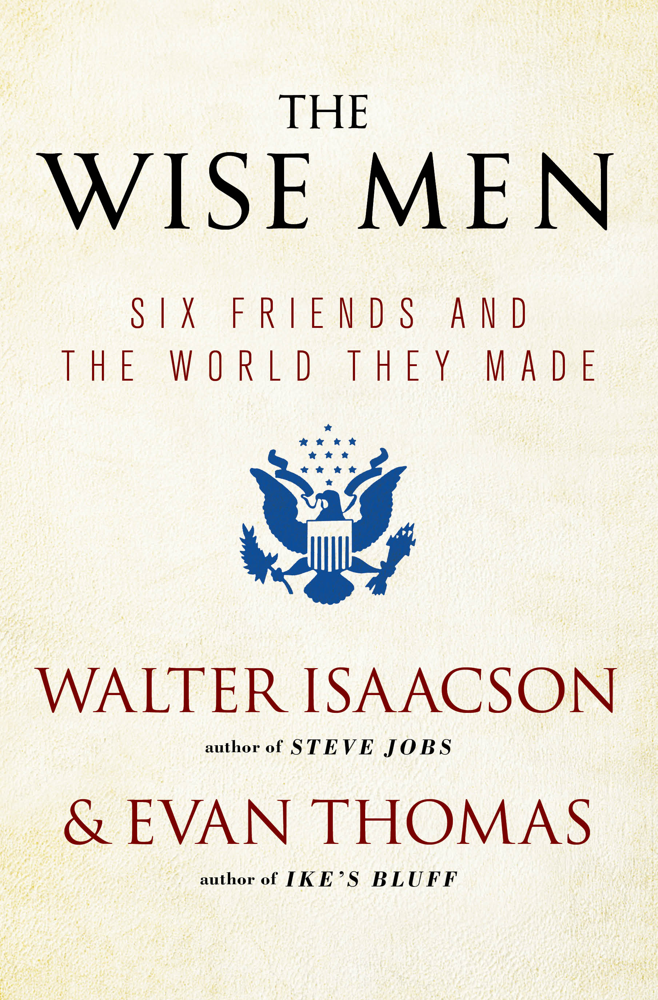
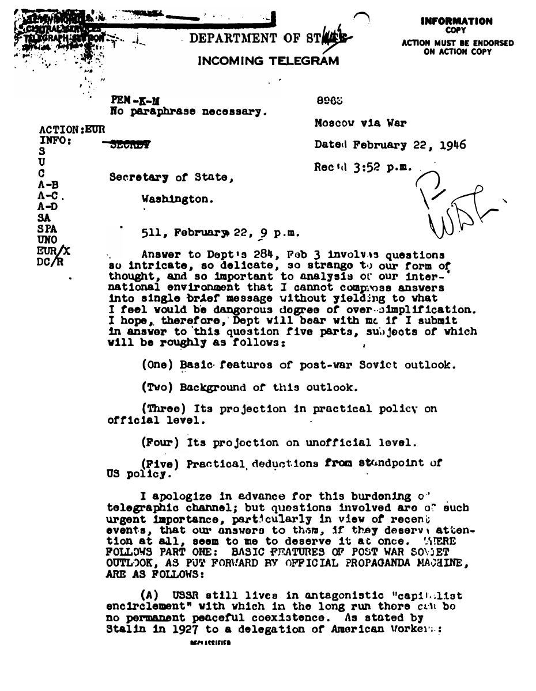
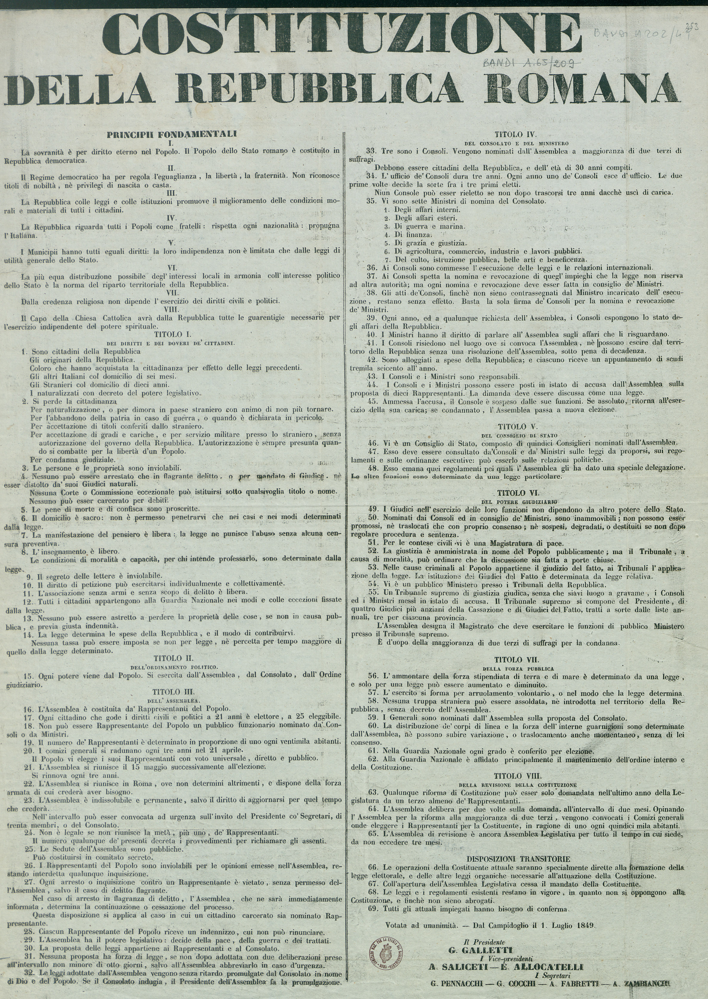
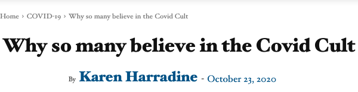

1:18:01 · 15 OPERE
Psicosi di massa, demenza collettiva o qualcosa d’altro?
Il filo del discorso
Il contributo accosta caccia alle streghe, persecuzione politica e comunicazione sanitaria per chiedere come una società possa rinunciare al controllo razionale delle proprie convinzioni. La citazione iniziale di Sylvia Plath e l’immagine descritta di alcune esecuzioni introducono il contrasto fra progresso scientifico e violenza collettiva. Il relatore non costruisce una storia clinica delle popolazioni: usa i termini del titolo come metafore polemiche, mentre richiama la responsabilità di chi giudica e di chi obbedisce. Reginald Scot offre il primo esempio esteso. Il relatore presenta il trattato del 1584, legge una critica cristiana delle credenze nella stregoneria e commenta il frontespizio di una riedizione del 1651. Lo interessa soprattutto il fatto che un individuo abbia contestato pratiche considerate normali dalle autorità del proprio tempo. Il richiamo a Shakespeare collega questa discussione all’immaginario teatrale. La tradizione sul rogo del libro ordinato da Giacomo I è però distinta dalla prova di una distruzione completa di tutte le copie. La parte centrale passa al maccartismo e alla difesa della dignità individuale. Una lunga lettura in inglese, accompagnata da traduzione e commento, ricostruisce la risposta dell’avvocato Joseph Welch quando McCarthy attacca il giovane Fred Fisher. Per il relatore, il richiamo alla decenza rappresenta un limite morale alla macchina dell’accusa: non basta perseguire un fine proclamato buono per giustificare ogni mezzo. I giudizi ricavati dalle espressioni dei protagonisti sono sue interpretazioni, non prove della loro personalità. La scheda distingue inoltre tre vicende che nel racconto si sovrappongono: Brecht davanti alla HUAC nel 1947, Oppenheimer nel procedimento AEC del 1954 e le udienze Army-McCarthy dello stesso anno. Questo modello viene contrapposto alla classe politica italiana. Il relatore polemizza con il curriculum e la comunicazione di Roberto Speranza, commenta un passo sul rapporto fra mascherina, presidente della Repubblica e automobile, e richiama Chaplin come esempio di intelligenza morale espressa anche attraverso la comicità. Si tratta di valutazioni politiche, spesso formulate con insulti: l’assenza di un testo trovato in rete, lo stato familiare o una fotografia non dimostrano incompetenza, illecito o una condizione clinica. Il percorso si allarga poi alla politica internazionale attraverso Kennan, The Wise Men e il Long Telegram. Il relatore critica una concezione pessimistica degli esseri umani, alla quale contrappone esperienze di solidarietà e sacrificio del Risorgimento. La citazione sul piccolo totalitario non viene però confusa con il testo del telegramma, e i giudizi sul ruolo di Kennan non diventano una dimostrazione che un solo individuo abbia determinato ogni guerra successiva. Nella parte conclusiva, immagini sui dispositivi di protezione, un richiamo a Meerloo e critiche alla comunicazione vaccinale sostengono la sua tesi di una pressione conformistica. Il relatore contesta mascherine, rassicurazioni dei responsabili sanitari e lettura delle segnalazioni VAERS, fino a invocare responsabilità giudiziarie. Queste affermazioni richiedono distinzioni che il montaggio polemico non garantisce: filtri per aerosol e protezioni contro gas hanno funzioni diverse; riduzione del rischio non significa assenza assoluta di infezioni; una segnalazione successiva a una vaccinazione non prova un nesso causale. Il richiamo finale a Mélenchon e il meme sulle dosi esprimono una protesta contro la coercizione, senza fornire una verifica autonoma delle accuse o un’indicazione clinica.
I libri nel discorso

Witch Burning (Rogo di strega)
Identificazione probabile
Copertina: Faber and Faber · Collected Poems, a cura di Ted Hughes
Copertina della raccolta inglese Collected Poems. Witch Burning è inclusa a pagina 135 nell’indice del volume; il testo è inoltre riscontrato nell’appendice 9.31 della tesi conservata da Manchester Metropolitan University. Non è una pubblicazione autonoma del componimento né l’edizione della traduzione letta nel video.
Riferimento ricavato dalla trascrizione automatica.
Passaggio 0:09 ↗ · Fonti e libro ↗
The Discoverie of Witchcraft
Identificazione probabile
Copertina: Riproduzione del frontespizio London, Richard Cotes, 1651, contenuta nell’edizione critica curata da Brinsley Nicholson, Elliot Stock, 1886, pagina PDF 59. Frontespizio storico riprodotto, non copertina esterna né facsimile della prima stampa 1584.
Immagine autentica dell’opera o del documento dichiarato; la trascrizione non certifica l’esemplare fisico del relatore.
Riferimento ricavato dalla trascrizione automatica.
Passaggio 5:47 ↗ · Fonti e libro ↗
Sogno di una notte di mezza estate (A Midsummer Night’s Dream)
Copertina inglese Folger Shakespeare Library / Simon & Schuster, grafica corrente: Copertina editoriale corrente di A Midsummer Night’s Dream, Folger Shakespeare Library / Simon & Schuster, a cura di Barbara A. Mowat e Paul Werstine, ISBN 9780743477543. La scheda dell’editore data questa edizione al 1 gennaio 2004; l’immagine reca Updated Edition. Testo inglese dell’opera, non locandina di uno spettacolo o edizione italiana riconosciuta nel filmato.
Esemplare illustrativo della stessa commedia; la data della scheda bibliografica non certifica l’anno di produzione grafica dell’attuale copertina. Nessuna copia particolare identificata nel video.
Nel passaggio: 857–862.6 s: verranno bruciate, pensate Shakespeare? C’è un carattere di; Nel passaggio: 862.6–869.47 s: sogno di una notte di mezzestate in cui, lo sono ricordo, come si chiama; Nel passaggio: 869.47–875.64 s: però anche per le streghe nel Mach-Beth, no? Shakespeare aveva sicuramente letto; segue Scott nel passaggio citato. Il riferimento è ricavato dalla trascrizione automatica e richiede conferma.
Passaggio 14:22 ↗ · Fonti e libro ↗
Macbeth
Copertina: BUR Classici, 25 gennaio 2022, introduzione, note e traduzione di Rocco Coronato, testo inglese a fronte, 272 pagine; ISBN 9788817160667.
Immagine autentica dell’opera, controllata visivamente; l’edizione di riferimento non è attribuita al filmato.
Riferimento ricavato dalla trascrizione automatica.
Passaggio 14:29 ↗ · Fonti e libro ↗
Vangelo secondo Matteo
Identificazione probabile
Copertina del volume completo: San Paolo, 2014 · Nuova Versione dai Testi Antichi · edizione di riferimento
Vangelo secondo Matteo è un libro della Bibbia. L’immagine mostra il volume completo San Paolo di riferimento, non un’edizione autonoma del singolo libro e non una versione identificata nella citazione.
Riferimento ricavato dalla trascrizione automatica.
Passaggio 18:53 ↗ · Fonti e libro ↗
Scambio Welch–McCarthy nelle udienze del 9 giugno 1954
Identificazione probabile
Copertina: Fotografia storica delle Army-McCarthy hearings nel 1954, riprodotta nella pubblicazione ufficiale del Senato 200 Notable Days, pagina 175. Joseph Welch a sinistra e McCarthy in piedi; la didascalia non certifica il giorno 9 giugno. Foto del contesto delle udienze, non scansione del verbale né copertina di libro.
Immagine autentica dell’opera o del documento dichiarato; la trascrizione non certifica l’esemplare fisico del relatore.
Riferimento ricavato dalla trascrizione automatica.
Passaggio 19:13 ↗ · Fonti e libro ↗
The Lawyer’s Afterthoughts
Identificazione probabile
Life, 26 luglio 1954 · copertina del fascicolo contenente il pezzo: Copertina originale del fascicolo Life del 26 luglio 1954, con il richiamo Joe Welch Sums It Up; non copertina autonoma dell’articolo né immagine del corpo o di un manoscritto. La relazione con The Lawyer’s Afterthoughts è confermata dall’indice fotografato del medesimo fascicolo.
Data leggibile in basso sulla copertina. La pertinenza deriva da titolo, data e indice della copia, non dall’identificazione del volto. Non è stata vista l’immagine del video per attestare l’identità materiale dell’esemplare.
Nel passaggio: Life Magazine, richiamo di copertina Joe Welch Sums It Up reso imperfettamente dalla trascrizione automatica, seguito dal riferimento a Fred Fisher. Titolo principale interno non pronunciato; corrispondenza con copertina e indice originali del fascicolo.
Passaggio 22:22 ↗ · Fonti e libro ↗
Il grande dittatore (The Great Dictator)
Grafica dell’edizione video Criterion: Film statunitense del 1940, United Artists, regia e sceneggiatura di Charles Chaplin, 125 minuti. Immagine della grafica Criterion, numero 565, disegnata da Olly Moss; non copertina libraria o locandina originale.
Grafica autentica della edizione video, con le due identità rappresentate in orientamenti opposti. La voce riguarda un film.
Riferimento ricavato dalla trascrizione automatica.
Passaggio 37:01 ↗ · Fonti e libro ↗
Tempi moderni (Modern Times)
Immagine ufficiale di Tempi moderni: Film del 1936 scritto, diretto, prodotto e interpretato da Charles Chaplin, con Paulette Goddard. Immagine ufficiale di catalogo.
Fotografia in bianco e nero fornita dal sito Chaplin: Charlot e un altro operaio fra gli ingranaggi. Non è una copertina di libro né una locandina con testo.
Riferimento ricavato dalla trascrizione automatica.
Passaggio 37:13 ↗ · Fonti e libro ↗
Perché guariremo. Dai giorni più duri a una nuova idea di salute
Identificazione probabile
Edizione ampliata successiva · Solferino 2024: Copertina ufficiale della SUCCESSIVA EDIZIONE AMPLIATA Solferino 2024, 320 pagine, ISBN 9788828214427: fondo chiaro, autore rosso e dicitura edizione originale con capitoli integrativi. Non è la copertina Feltrinelli 2020 e non è attribuita al video del contesto 2023.
Immagine autentica dell’opera, controllata visivamente; l’edizione di riferimento non è attribuita al filmato.
Riferimento ricavato dalla trascrizione automatica.
Passaggio 40:14 ↗ · Fonti e libro ↗
The Wise Men: Six Friends and the World They Made
Copertina: Copertina ufficiale Simon & Schuster della ristampa 2013, ISBN 9781476728827, con nuova introduzione degli autori. Opera del 1986; ristampa documentata, non esemplare del video.
Immagine autentica dell’opera o del documento dichiarato; la trascrizione non certifica l’esemplare fisico del relatore.
Riferimento ricavato dalla trascrizione automatica.
Passaggio 49:26 ↗ · Fonti e libro ↗
Long Telegram: telegramma al Segretario di Stato del 22 febbraio 1946
Identificazione probabile
Copertina: Prima pagina del facsimile originale del telegramma diplomatico Kennan, Moscow, 22 febbraio 1946, n. 511, riprodotto dal National Security Archive. Documento d’archivio, non copertina o frontespizio editoriale.
Immagine autentica dell’opera o del documento dichiarato; la trascrizione non certifica l’esemplare fisico del relatore.
Riferimento ricavato dalla trascrizione automatica.
Passaggio 50:49 ↗ · Fonti e libro ↗
Costituzione della Repubblica romana del 1849
Identificazione probabile
Facsimile del manifesto costituzionale del 1849, BSMC/ICCU: Scansione integrale del manifesto a stampa Costituzione della Repubblica romana, 1849: otto Principii fondamentali e 69 articoli su due colonne, con formula finale del voto unanime dal Campidoglio il 1 luglio 1849 e nomi dei firmatari a stampa. Biblioteca di Storia moderna e contemporanea, Roma, inventario 1023408, segnatura bandi.a.202/49, catalogo IEI0314473; riproduzione digitale ICCU. Non autografo dei costituenti, non copertina libraria e non Costituzione italiana del 1948. Esemplare illustrativo, non riconosciuto nel filmato.
Il catalogo descrive un manifesto di 57 cm, [S.l. : s.n., 1849], pubblicazione luglio 1849; non attribuiti un tipografo o luogo di stampa non dichiarati. La riproduzione mostra l’intero testo finale datato 1 luglio, distinta da stesure preliminari e dal decreto di fondazione della Repubblica del febbraio 1849.
A 63secondi: contesto del Risorgimento, Repubblica romana e giudizio sulla sua costituzione. Nessun anno o articolo letto; identificazione probabile del documento 1849 verificato nella fonte istituzionale.
Passaggio 53:42 ↗ · Fonti e libro ↗
Why so many believe in the Covid Cult
Identificazione probabile
Intestazione dell’articolo · The Conservative Woman: The Conservative Woman, 23 ottobre 2020.
L’immagine raffigura l’intestazione della pagina, con titolo, firma e data. Il riferimento all’articolo resta probabile perché nel video non sono pronunciati nome dell’autrice, anno e testata.
Nel passaggio: proposta di tradurre un testo scritto in ottobre, con titolo reso in italiano sul perché tanti credano nel culto del Covid. Titolo inglese, autrice e data completa verificati separatamente nell’intestazione primaria; non lettura del corpo nel video.
Passaggio 55:21 ↗ · Fonti e libro ↗
The Rape of the Mind
Copertina: World Publishing Company · 1956 · testo inglese
Fotografia della copertina dell’edizione originale del 1956, fornita dal catalogo OpenLibrary. I segni d’usura appartengono all’esemplare fotografato. Edizione del video non accertata.
Riferimento ricavato dalla trascrizione automatica.
Passaggio 1:02:19 ↗ · Fonti e libro ↗